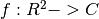

Plot 3D¶
This plot function requires mayavi.
surfcf¶
- WaveBlocksND.Plot3D.surfcf(gridx, gridy, phase, modulus, colormap=None, view=None)¶
Plot the modulus of a complex valued function  together with its phase in a color coded fashion.
Parameters: - gridx – The grid nodes along the
 axis of the real domain
axis of the real domain 
- gridy – The grid nodes along the
 axis of the real domain
axis of the real domain - phase – The phase of the complex domain result f(grid)
- modulus – The modulus of the complex domain result f(grid)
- colormap – The colormap to use, if none is given, compute the ‘default’ QM colormap.
- gridx – The grid nodes along the